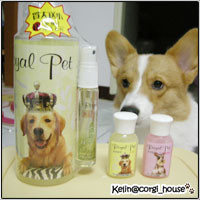
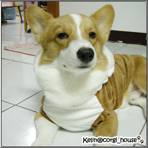

上次在其他狗狗的部落格看到皇家寵物有洗毛精試用的專案
是免費索取但使用後要寫一下試用心得 ^^
剛好覺得摩卡卡每次洗完很快就臭了!想試試看別的有沒有差別
所以就立刻寫信去索取嘍!!
當然他們也很快的回信了~不過因為100ml的沒了所以改寄了30ml的試用瓶*2
那也喔科~反正我是真的想試用看看效果
不過第二次回信說會在11/3寄出~結果我等到了11/11都還沒收到 一.一
(我們家有那嘛偏遠嗎??)
後來想算了~沒寄就算了

因為剛剛好我家許卡卡先生在運動會的★定力比賽中得到了第一名★ ~哇哈哈哈
拿到的獎品剛好是他們家的洗毛精
(第一名是我說的啦!因為其實也沒有真正的名次..哈)
媽咪太驕傲了~~寶貝~ 泥好棒歐!!
不過就在我用了摩卡的獎品幫他洗完澡之後~歐!真巧
那個遲遲未到的試用瓶剛好在下午收到了~所以我還是寫了試用心得
因為人家還是真的有寄給我嘛~

洗毛精真的好香~摩卡卡洗完後一整個香ㄆㄧㄣㄆㄧㄣ吶!
泡泡也很多~不會太難搓出泡泡~沖完水之後也不會感覺太乾澀
但我最喜荒是吹乾完~毛真的很柔順~軟軟柔柔的!!!很好摸
現在才洗完第二天~還是香的
不知道香味可以維持多久??? 希望可以達到我的預期!!哈